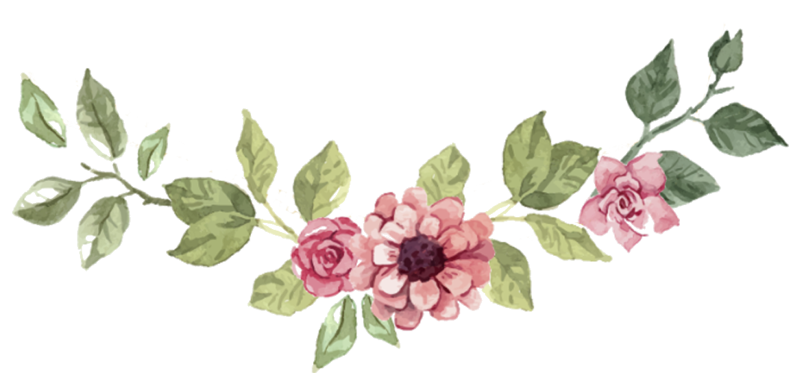

Wedding Time
DOAA
DIAA
تموز
2026
سبت
أحد
إثنين
ثلاثاء
أربعاء
خميس
جمعة
1
2
3
4
5
6
7
8
9
10
11
12
13
14
15
16
17
18
19
20
21
22
23
24
25
26
27
28
29
30
31
المتبقي على الحفل الكبير
10
أيام
00
ساعة
00
دقيقة
00
ثانية
